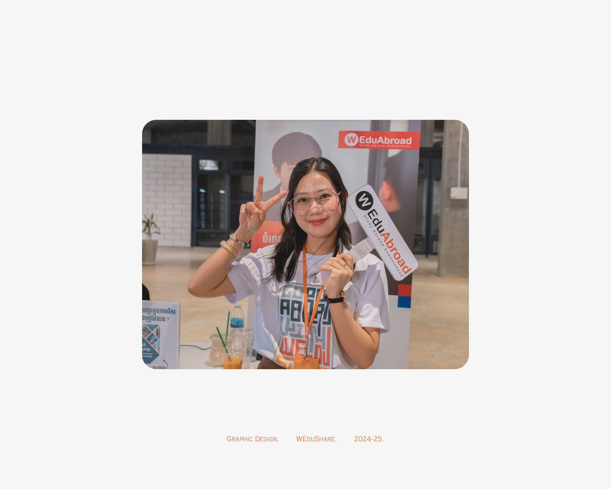
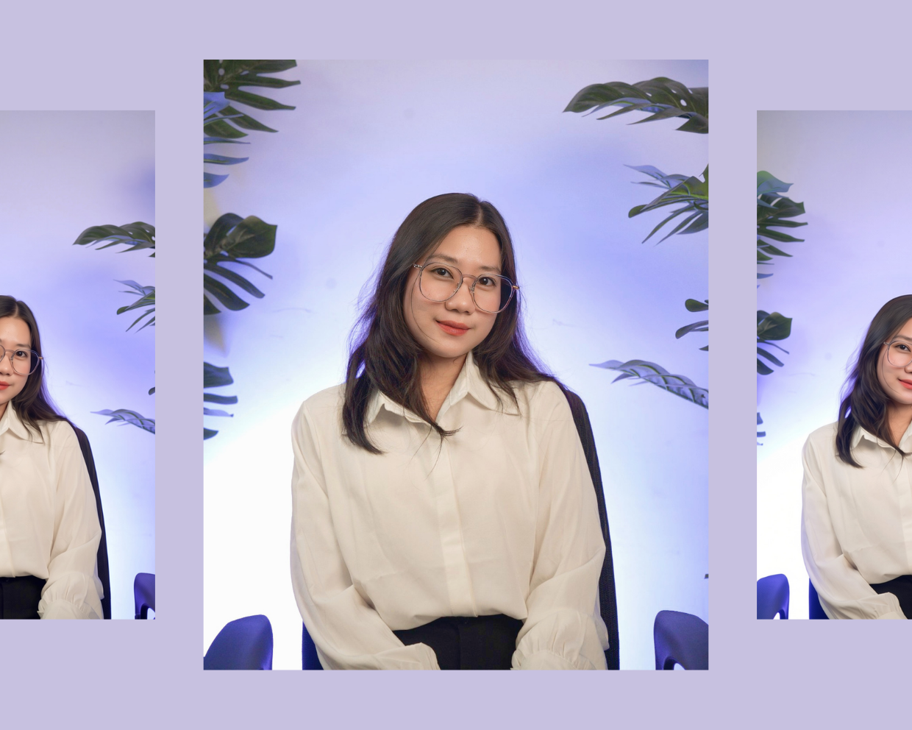
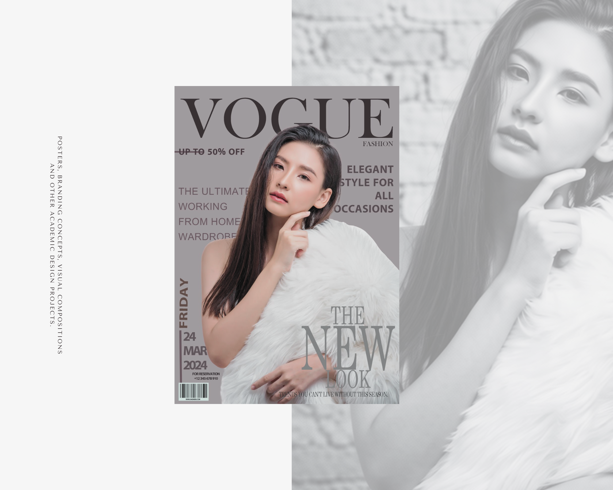
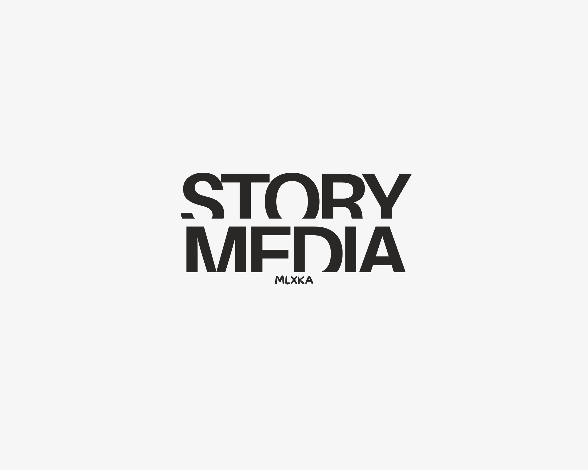
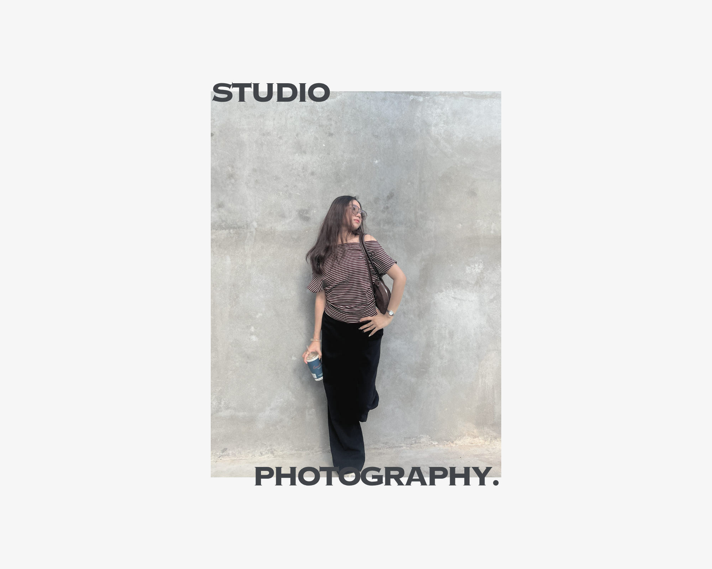

VIEW
Independent creative / Phnom Penh, Cambodia
Available for creative opportunities ↗
Ideas into visual stories.
I'm Teng Sovanmolyka — a graphic designer and Management Information Systems student interested in thoughtful visuals, clear communication, and meaningful digital experiences.
Scroll to explore
01 — 08 / Portfolio
01 / A little introduction
About me.

Curious by nature. Creative by choice. Always learning through making.
I'm a creative and detail-oriented MIS student with hands-on experience in graphic design and digital content creation. I enjoy turning ideas into visual communication that feels clear, engaging, and considered. My background in technology and design helps me approach creative work with both curiosity and structure.
Phnom Penh
Based in Cambodia
2024–25
Design internship
MIS
Field of study
02 / Selected explorations
The work.
A selection of design work from my internship, academic assignments, and personal creative explorations.

VIEW
VIEW
VIEW03 / Where I've contributed
Experience.
November 2024 — May 2025
WEduShare
Graphic Design Intern
Worked with the marketing team to create visual content for digital communication and promotional campaigns.
- Designed social media graphics, banners, and digital advertisements.
- Collaborated with the marketing team on promotional visual content.
- Assisted with video shooting and digital content production.
- Managed multiple creative tasks while meeting deadlines.
Next chapter
Open to opportunities
Junior Graphic Design / Creative Roles
Interested in opportunities to keep learning, contribute to a creative team, and develop thoughtful visual work.
04 / Learning & foundations
Education.
2023 — Present
SETEC Institute
Bachelor of Management Information Systems (MIS)
Relevant areas of study include Information Systems Management, Business Technology, System Analysis and Design, Software Development, and Graphic Design.
Graduated 2023
Prek Leap High School
High School Diploma
2019
The Westline School
Secondary Education
Languages: Khmer (native) · English (intermediate)
05 / Tools & strengths
The toolkit.
Design & creative
Adobe Photoshop
Adobe Illustrator
Adobe InDesign
Canva
Adobe Premiere Pro
DaVinci Resolve
Ways of working
Creativity & innovationStrength
Attention to detailStrength
Team collaborationStrength
Time managementStrength
Problem-solvingStrength
Microsoft Office SuiteTechnical
Digital advertising materials · Basic video production · Visual communication
06 / A printable overview
The resume.
TENG SOVANMOLYKA / CV
More about
my experience.
View or download my resume for a concise overview of my education, internship experience, creative tools, and contact details.
07 / Start a conversation
Contact.
Have a good
idea?
Get in touch
For design opportunities, collaborations, or a friendly hello, feel free to reach out.
Let'sconnect.
Follow my journey, explore my work, and feel free to reach out!